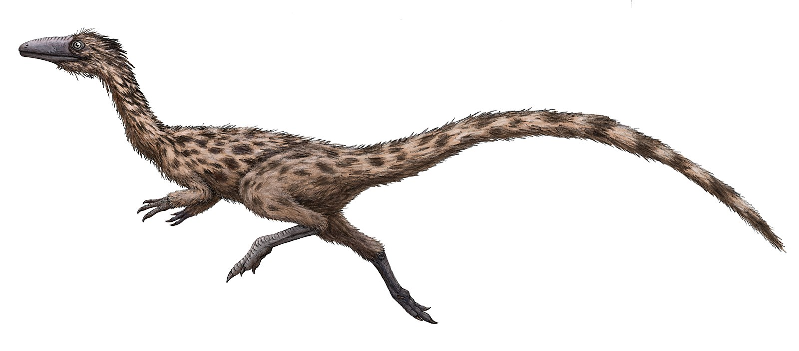
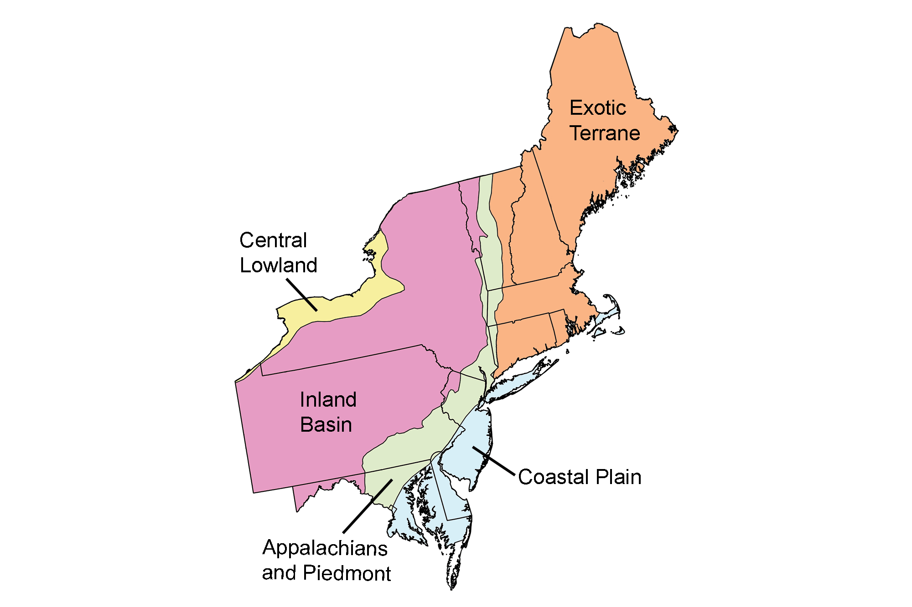
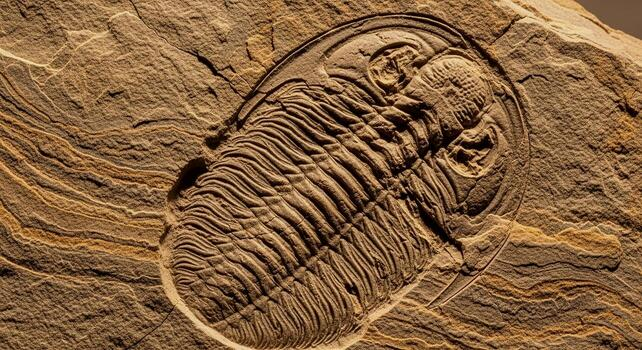

Massachusetts is a place with a very interesting and very, VERY long history of different types of
life!!! From dinosaur bones to prehistoric pinecones, and from dinosaur tracks to ancient burrows,
Massachusetts has had many different types of life within its bounds for millions of years!
Fossils of at least two different species of dinosaurs have been discovered in Massachusetts! One of
which is the Podokesaurus Holyokensis. However, the definitely are NOT the only species that lived here.
Due to the past conditions of the Connecticuit River Valley, there are may dinosaur footprints within
this state.

Dinosaurs are not the only things that left fossils in Massachusetts though.
Within Massachusetts, plants, insects, mammals, marine invertebrates, and more have left behind evidence of their lives.
Fossils in Massachusetts are from the Paleozoic to the Cenozoic. They formed by plants and animals getting buried by sediments like clay, sand, and mud OR by other traces of life such as footprints or burrows getting preserved similarly. Fossils haven't always formed in Massachusetts though, this is due to the land being underwater or it being a time before life.
Massachusetts has three major physiograpic regions: Exotic Terrane (making up the majority of the state),
Appalachians and Piedmont (making up the western edge of MA), and Coastal Plain (along the cape and islands).
These regions have varied rocks, minerals, fossils, soil, and other geological features.

As tectonic plates shifted over millions of years, parts of Massachusetts have been submerged or exposed. Also, at some points in time,
Massachusetts was covered by ice sheets such as the Laurentide Ice Sheet.
Norfolk county has the highest amount of fossil sites within Massachusetts and
Nantucket county has the least amount of fossil sites within Massachusetts!
However, it is important to note that every county in Massachusetts has fossil sites!
But, let's break it down further...
Quincy has the highest amount of fossil sites out of every Municipality in Massachusetts at 20 sites!
Some of the fossils there are over 486 million years old, as they are trilobites from the Cambrian Period!
Trilobite fossils have also been found in Weymouth, Braintree, and other MA municipalities

A Map of Fossil Sites Across the USA
Some fossils might just be footprints or eggshells in stones, but that doesn't make them any less wonderful.
Fossils are important because they give us a snapshot into the past. They tell us that we weren't always here (by a long shot!)
and that those who were before us lived in so many different ways, in different times.
They made burrow homes and traveling along
what is now a riverside with their family. They grew into beautiful ferns or dropped primitive pinecones on the coast. They saw mountains grow,
ice sheets spread, and humans arrive.
This may be a bit sappy, just like those pinecones probably were, but it is beautiful. It is proof of life!